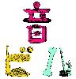
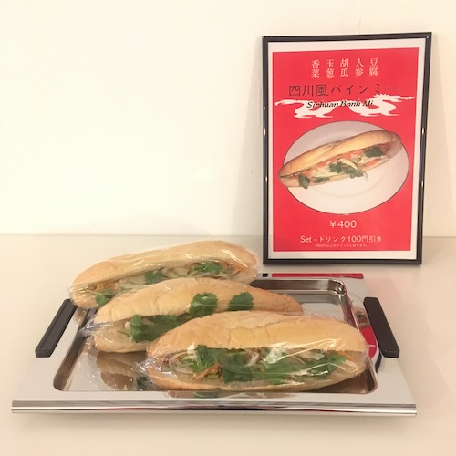

Index of 2019
 Hello
Hello
 私たちの目標
私たちの目標
 TWS1
TWS1
 Menu
Menu
 HF+S1
HF+S1
 MS1
MS1
・西天満のペフのはじまりと目標
・西天満のペフの運営メンバーによる３つの企画展
TWS1
by 小濱史雄 | ステファン・アレキサンダー | 松尾信太郎
（企画：筒井 一隆 | 鷲尾 怜 | ささじまかずま）
HF+S1
by ばばまさみ | 大川原暢人 | 黒川岳 | 船川翔司
（企画：ハマジ(KK manga) | 船川翔司 | ささじまかずま）
MS1
by 一周回ってつらい | 九鬼みずほ | 趙里奈
（企画：モアレ | ナイスショップスー）
その他
西天満のペフ1階喫茶兼フリースペースのメニュー表など
6 PDFs / Total 115 pages
 なかよしフェアー
なかよしフェアー
 Best Friends from France
Best Friends from France
 NS1
NS1
 Green People
Green People
 Tongue finishes back at the root of itself
Tongue finishes back at the root of itself
 西天満のペフ
西天満のペフ
・西天満のペフに滞在した10名のアーティストによる4つのレジデンスプログラム
なかよしフェアー
by Scent (Josefina Valdés) | Emilio Algo
メキシコ発のファッションブランド「セント」のデザイナーホセフィーナ・ヴァルデスと、メキシコ在住の家具デザイナーエミリオ・アルゴによるレジデンスプログラム
レジデンスアーティストが運営する「セント」に加え、西天満のペフのメンバーが運営する3つのプロジェクト「Pure
Voyage」「tbpj」「abi」によるポップアップシショップを開店しました。
Best friends from france 2019
by Jean-Philippe Bretin | Vanessa Dziuba | Sammy Stein | Séverine Bascouert
フランス・パリより招聘した4名のアーティストによるレジデンスプログラム
ジョン＝フィリップ・ブレタンとヴァネッサ・ズヴァによる展覧会「サインド・カーテン」、サミー・ステインとセブリーン・ヴァスクェ（L'Institut
Sérigraphique）による展覧会「フランスのカード」を開催しました。
NS1
by Nicholas Strobelt | Joseph Torres | Yuu Takamizawa
アメリカより招聘した2名のアーティストによるレジデンスプログラム
レジデンスアーティスト、ニコラス・ストロベルトとジョセフ・トーレスに加え、ギャラリー/コレクティブ4649(東京・巣鴨)に所属する現代美術家高見沢優海によるグループ展を開催しました。
Green People
by Laurel Schwulst | Elliott Cost
アメリカより招聘した2名のアーティスト／デザイナー、ローレル・シュルストとエリオット・コストに加え、ペフの支配人ささじまかずまによる滞在制作および展覧会を開催しました。
その他
メキシコ人アーティスト、フェラン・プラとアナ・マルティネス・フェルナンデスによる展覧会「Tongue finishes back at the root of
itself」、西天満のペフの店内写真など
6 PDFs / Total 196 pages



・西天満のペフを終えて
現在進行形のプロジェクト「音ビル」「i choose」「プレイタイムズ」「chotto crazy」
5 PDFs / Total 111 pages
 ジンジャーシロップ
ジンジャーシロップ
 レモンシロップ
レモンシロップ
 ホワイトソース
ホワイトソース
 ジャパメックス・タコス
ジャパメックス・タコス
 四川省風バインミーサンドウィッチ
 マルセイユスタイルモーニングセット
マルセイユスタイルモーニングセット
 サマーコーンスープ
サマーコーンスープ
 白湯
白湯
・レジデンスアーティストなどから伝授された8つのレシピを収録
ジンジャーシロップ
by Dove
レモンシロップ
by Dove
ホワイトソース
by Dove
ジャパメックス・タコス
by Emilio Algo | Josefina Valdés (Scent)
四川省風バインミーサンドウィッチ
by Dr. Sushi (via Bánh Mì Verlag)
マルセイユスタイルモーニングセット
by Jean-Philippe Bretin | Vanessa Dziuba
サマーコーンスープ
by Laurel Schwulst
白湯
by Dove
8 PDFs / Total 58 pages
かおちょに聞きたい50のこと
れんれんに聞きたい50のこと
ふなに聞きたい50のこと
ルに聞きたい50のこと
あくちゃんに聞きたい50のこと
TKに聞きたい50のこと
ぱるに聞きたい50のこと
あっちに聞きたい50のこと
西天満のペフの運営メンバー8名へのインタビュー集
8 PDFs / Total 96 pages
Archive of pe hu talk
食べたもの、他
manga and something
Sign
Lynx
日仏の友情
今でも大切
同感覚祭
新鑑真と上海
#magicringmakefriendship
理想の一日
遅くまで空いてるプール
etc.
・ペフの運営メンバーによる連載「ペフトーク」「食べたもの、ほか」「manga and something」、ペフのテーマソング「Sign」の音源など
Archive of pe hu talk by Masamichi Furukawa
- Age of
- GAFA
- 中国AIアナウンサーから考える今後の世界
- 2018 Best
- 千紗子と純太の謎
[Guest: BIOMAN]
- ナイスショップスー
[Guest: ナイスショップスー]
- お茶会トーク:ちょっと豊かになるモノ・コト/かけた曲
[Guest: seaketa | INDGMSK | thaithefish]
- リアル・オーガナイザーが消える未来
食べたもの、ほか by ハマジ(KK manga)
manga and something by ayami konishi
Lynx by Dove
- 作曲/編曲:Dove
- mix/mastering:Le makeup
Sign ペフの歌
- 作曲/編曲:Le makeup
- 作詞:中尾香織 | ささじまかずま
16 PDFs / 2 videos / 2 tracks